ERA listing portal
Designing a property listing portal for users searching for sale or rental properties.

Making property searches easier
As the market leader in real estate in Singapore, ERA engaged us for the design and development of a custom property listing portal. The objective is to enhance ERA's brand presence, deepen the affinity between consumers and agents, and streamline the property search experience for their customers.
This portal aims to simplify the process of searching for properties for sale and rent, ensuring a seamless and efficient experience for all users.
Studying the existing agent portal
ERA had a basic portal used by their agents to manage their property listings. This served as our starting point for creating a new customer portal. To kick off the project, I conducted a thorough analysis of this existing product to identify any usability issues and provide recommendations. This in-depth study allowed me to pinpoint specific areas that needed improvement, providing a clear roadmap for enhancements during the design process. Here are some of the insights gained and my recommendations.
Limited filter options
- Limited filter options make it harder for users to find properties that meet their specific criteria.
- This can lead to a more time-consuming and frustrating experience for users who have specific requirements or preferences.
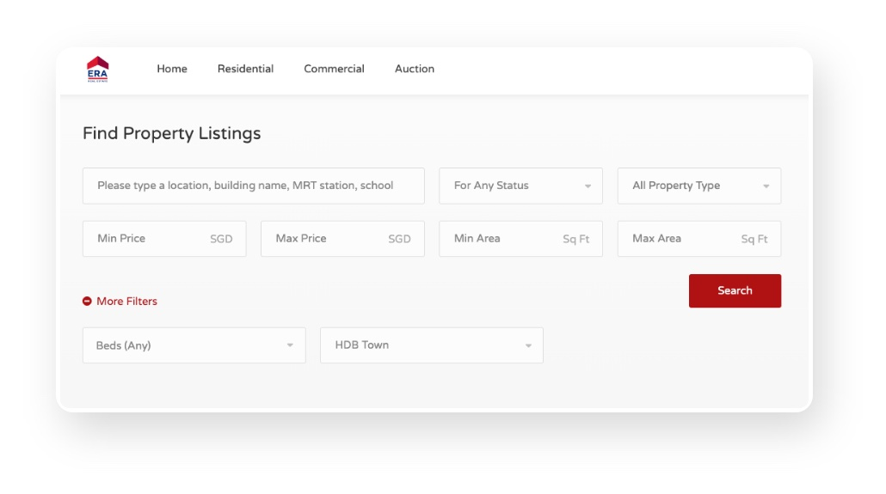
Expand property search filters
- Implement a more comprehensive list of filters eg. build Year, floor level, bathrooms, desired amenities, etc.
- This will provide the user more control and customisation over their property search experience.
Inaccessible search/filter functions when user scrolls down
- On scroll, the search and filter functions scroll together, moving out of the user’s view.
- Users have to scroll back to the top of the page to view/modify their preferences.
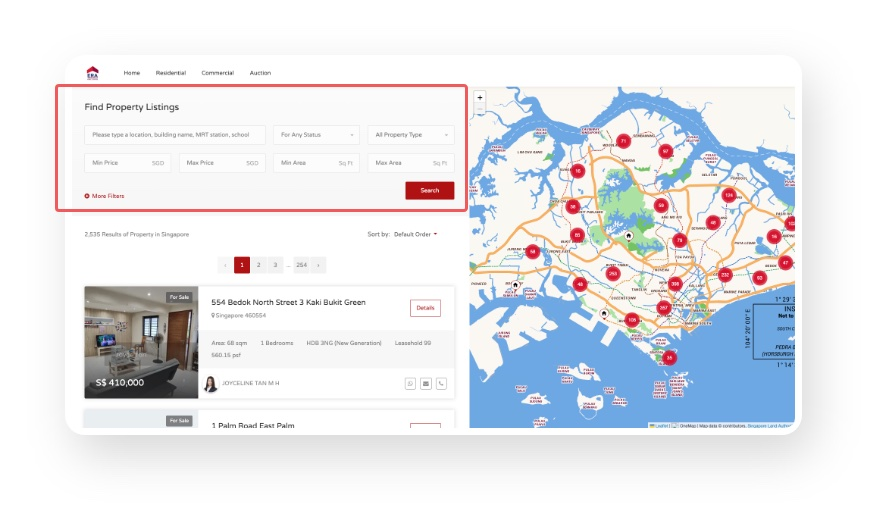
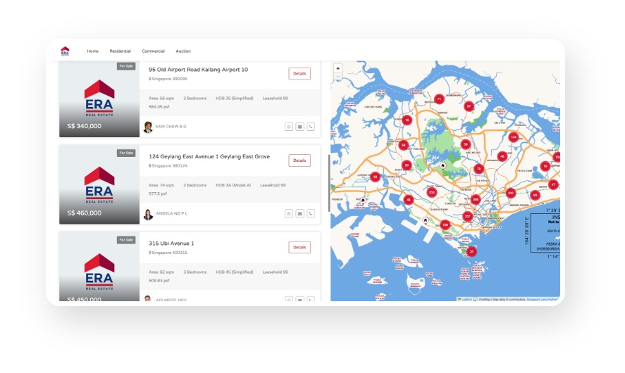
Fix search bar to top
- Search and filter functions play a crucial role in helping users find properties that meet their specific criteria. It is a good practice to keep them easily accessible and visible throughout the user’s browsing experience.
- Keep it fixed to top - this allows users to modify their search criteria or perform a new search without scrolling back to the top of the page.
Poorly designed information cards
- The current design does not effectively communicate key details, decreasing the chances of generating interest
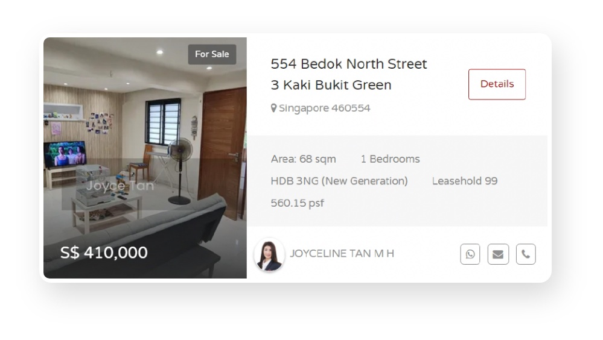
Highlight key details
- Ensure that essential information such as price, property type, size are prominent and stands out from the rest of the description.
- Incorporate visual elements such as icons. For example, use icons to represent bedroom, bathroom, etc.
Simple yet comprehensive search bar
In the hero section of the portal's homepage, we prominently featured a versatile search bar with two distinct tabs: "Buy" and "Rent." This design caters specifically to our primary user groups - those interested in purchasing properties and those looking to rent - making the search process straightforward and efficient for all users.
The search field allows users to search by key criteria such as location, MRT stations, or schools, recognising these as crucial factors in home selection. We also included dropdown menus that enable users to refine their search further by property type, price range, and the number of bedrooms. This comprehensive approach ensures that users can quickly and easily find properties that meet their specific needs and preferences.
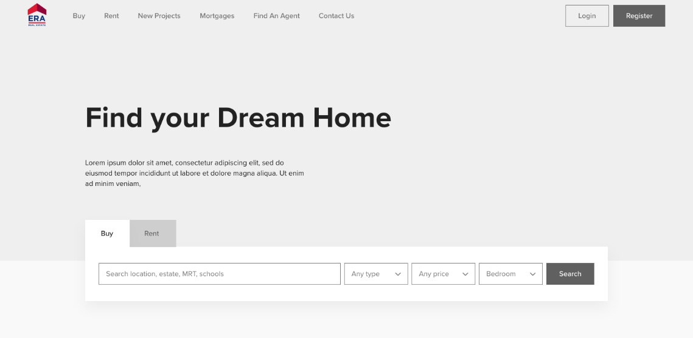
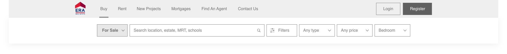
Tailored filters for specific property types
The filters adjust based on the selected property type to provide relevant information. For instance, users searching for an HDB might need to know the HDB Built Year, while those interested in landed, commercial, or industrial properties would be more concerned with Tenure. Additionally, each property type has distinct sub-types. Therefore, I designed different filters tailored to each category, ensuring that all users receive the specific information they need for their property search.
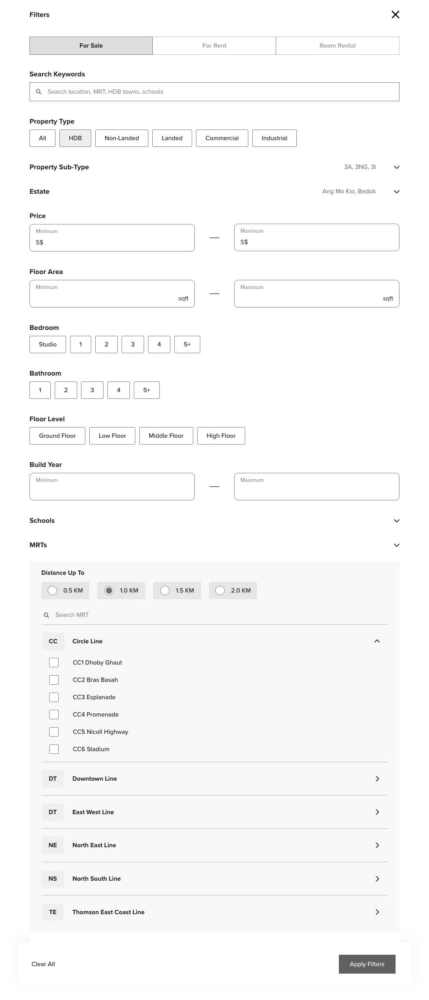
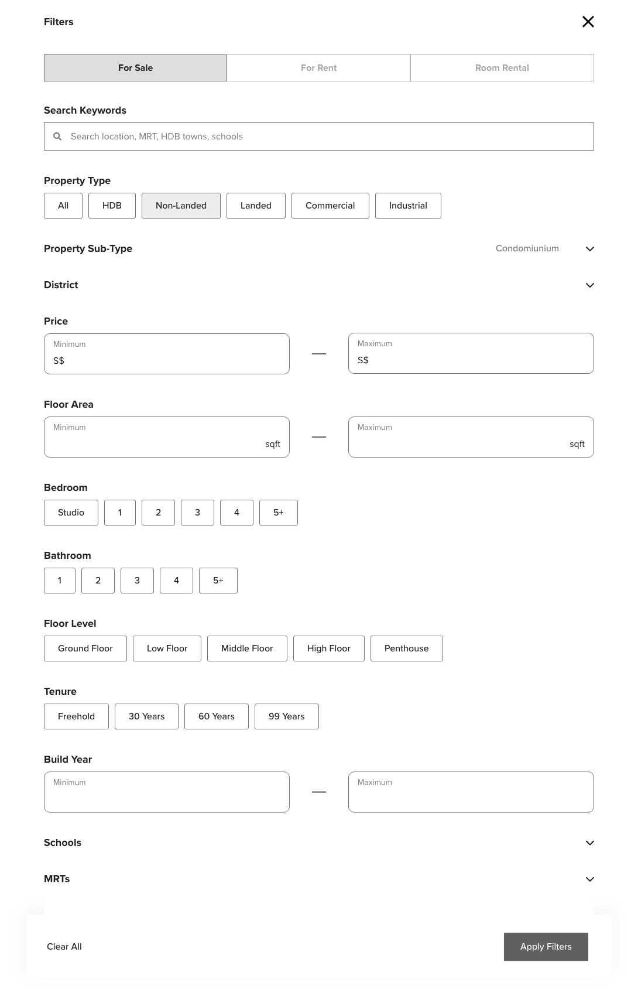
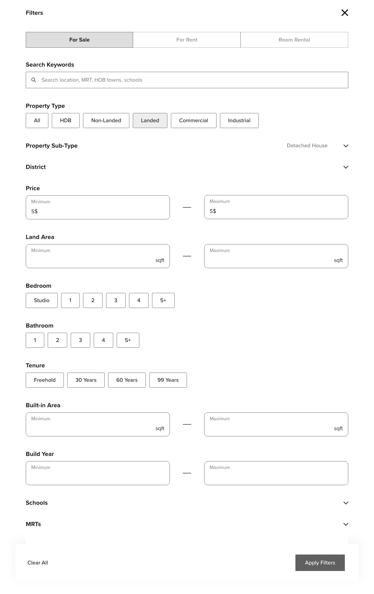
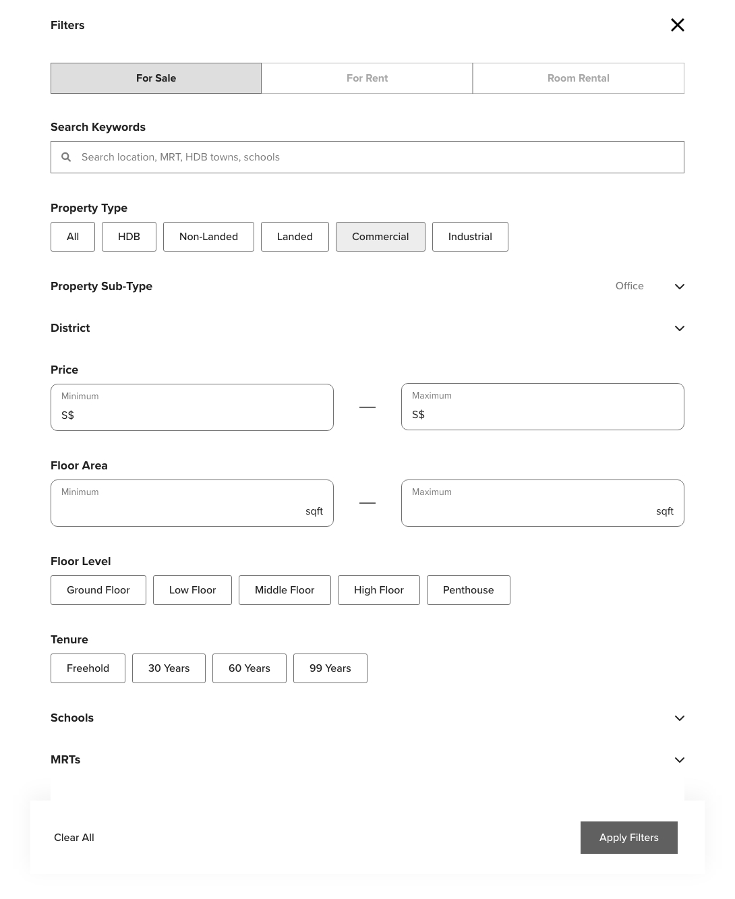
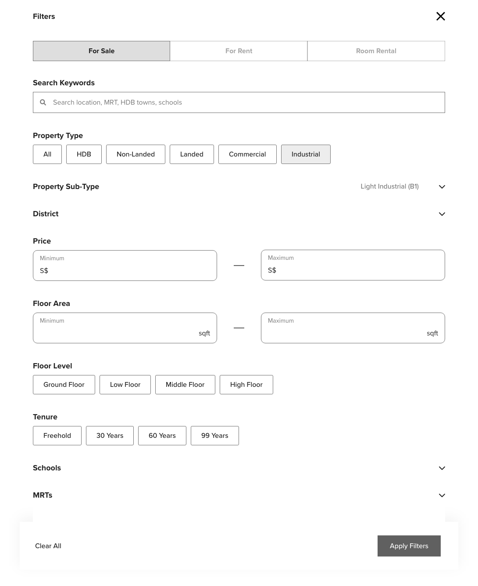
Prototyping the filters functionality
I created a simple prototype to allow stakeholders to see firsthand how the design caters to different user needs:
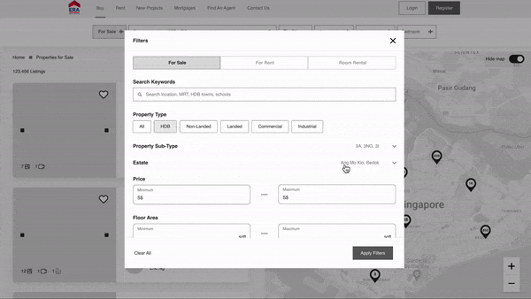
Designing the cards for latest listings and upcoming condo launches
Cards are a key UI element in our property listings, effectively presenting essential information. On the homepage, we feature both Latest Listings and New Launches. The Latest Listings section highlights houses currently for sale, while New Launches showcases upcoming condo projects.
The cards on the homepage include category tags to indicate whether a property is for sale or rent, and the property type, helping users quickly filter based on their needs. Pricing is prominently displayed, followed by other important details like location, size, and the number of bedrooms and bathrooms, allowing for easy property comparison.
For the Buy/Rent pages, which caters to users who are more serious about purchasing or renting, I designed more detailed cards with additional information, such as agent contact details and the distance to the nearest MRT station. This ensures they have all the relevant information needed to make informed decisions.
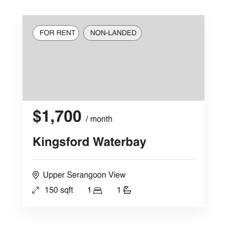
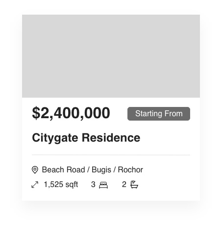
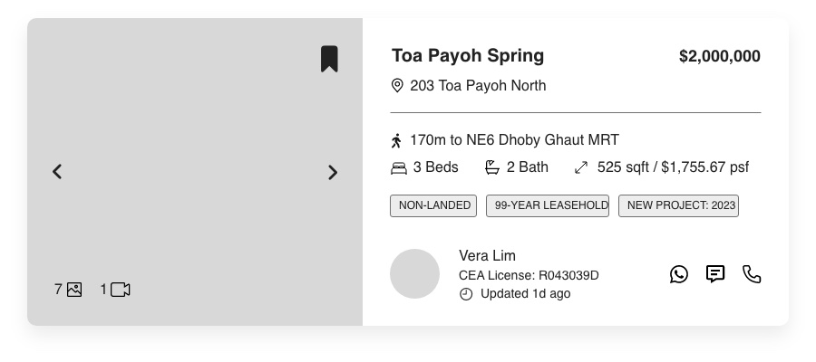
Browsing by map vs. list
We created two distinct designs to enhance the user experience: a map view and a list view. The map view contains an interactive map with pinned listings which allows users to visually browse properties based on their geographic preferences, providing an intuitive way to explore neighbourhoods and nearby amenities. This view is ideal for users who prioritise location in their search.
On the other hand, the list view enables users to browse properties by selecting specific options such as property type, neighbourhood, number of bedrooms, etc. from a comprehensive list. This structured approach works better for users who have clear criteria and prefer a more detailed and organised presentation of property information. By offering both map and list views, we ensure that users can find properties in the way that best suits their needs and preferences.
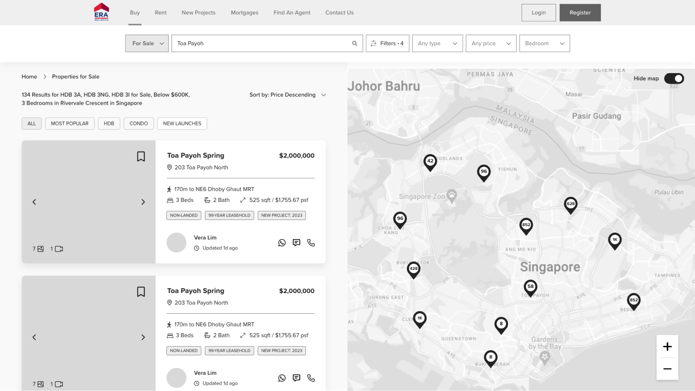
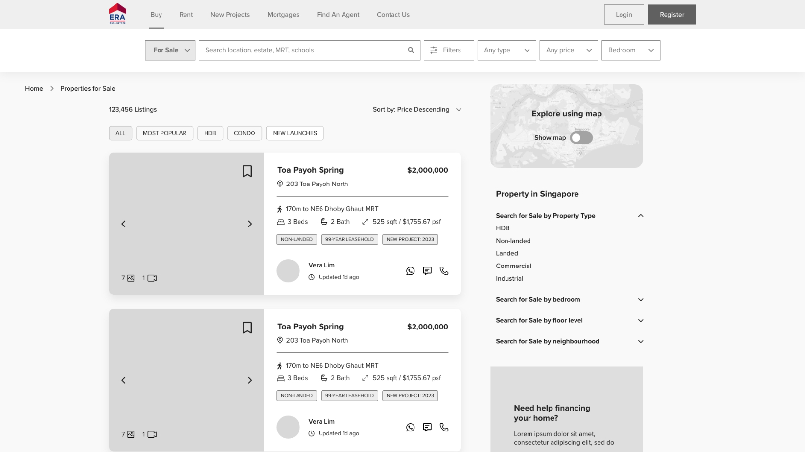
Designing a mortgage calculator
On the property listing page, I designed an estimated mortgage calculator. This tool automatically calculates a mortgage based on 75% of the property price, reflecting the maximum loan available from financial institutions (FIs) in Singapore. The calculator uses a default tenure of 30 years, which is the maximum term for loans in Singapore, and a standard interest rate of 4%, typical among FIs. Users have the flexibility to customise fields such as the price, loan amount, interest rate, and tenure to calculate their personalised estimated mortgage. I also added a chart to show how the estimated monthly mortgage changes based on the downpayment, helping users understand the financial impact of buying the property.
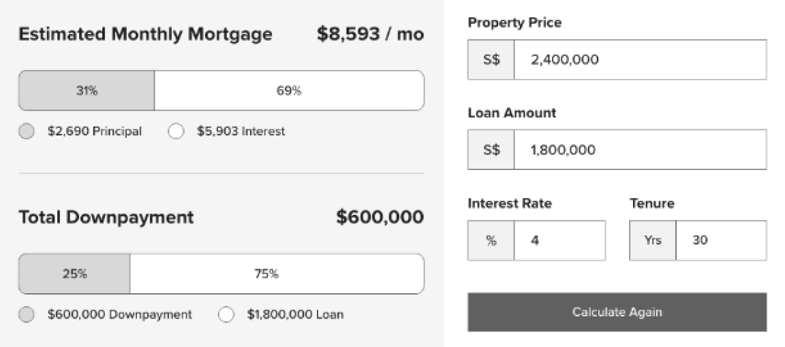
Remaining wireframes and next steps
Here are the additional wireframes I've created. We're currently in the process of developing a second batch of wireframes that includes My Profile, Agent Listings, and Mortgages, and we're also translating these into high-fidelity designs. Stay tuned for updates!
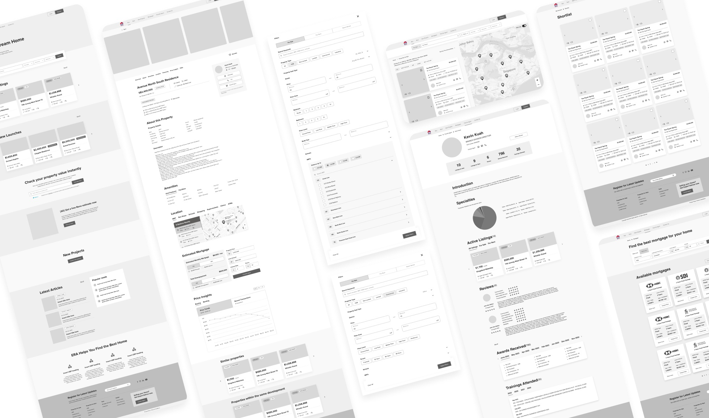